La procédure d'ajout d'un pilote diffère entre les versions 6.0 et 6.1 : choisissez la procédure adéquate :
Pour la version WSC v6.0
-
Accédez à la Console de Supervision (WSC) en tant qu'administrateur ;
-
depuis le Menu Principal, cliquez sur Gestion des pilotes :
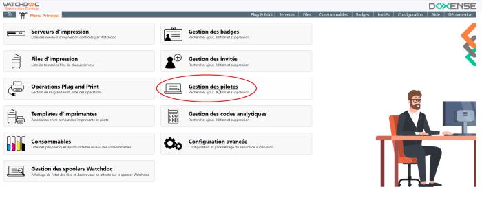
-
Dans la liste d'actions, cliquez sur le bouton Ajouter un pilote d'impression qui est dans le bloc à droite de l'écran.
L'interface d'ajout de pilote s'affiche :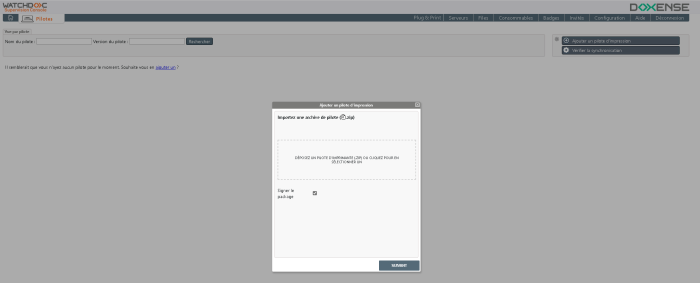
-
Sélectionnez le pilote que vous avez téléchargé sur le site du constructeur.
Le pilote doit être de type 3.
→ Le pilote est reconnu par Watchdoc.
-
Désactivez l'option Signer le package.
-
Cliquez sur Suivant :
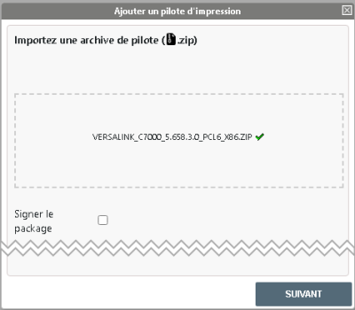
-
Le pilote est analysé par Watchdoc :
.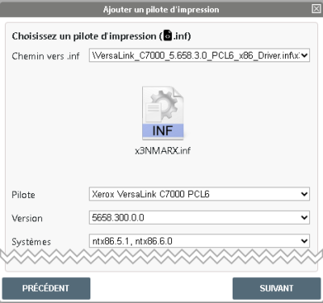
-
Cliquez sur Suivant.
→ Par défaut, Watchdoc propose de créer une file d'impression universelle associée au pilote. Cette file permettra d'imprimer avec ce pilote sur tous vos périphériques d'impression.
-
Créez cette file en la nommant Impression sécurisée.
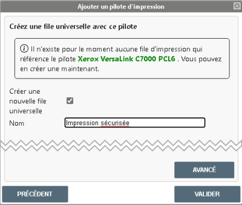
→ Watchdoc déploie le pilote sur le serveur d'impression et crée la file universelle (pour plus d'informations, cf.Configurer une file universelle.) 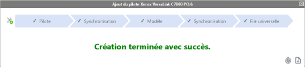
→ Vous pouvez ensuite Activer l'interface WES
Pour la version WSC v6.1
Télécharger le package certifié (tous les pilotes sauf Epson et Ricoh)
-
En tant qu'administrateur, accédez au serveur qui héberge WSC.
-
Via un navigateur, rendez-vous sur le site officiel du fabricant.
-
Téléchargez le package du pilote correspondant au modèle du périphérique d'impression à installer : généralement, il s'agit d'une archive /fichier compressé.
-
S'il ne s'agit pas d'un fichier compressé (un .exe, par exemple), compressez-le car WSC traite exclusivement des pilotes présentés au format .zip.
-
Enregistrez le package sur le serveur.
Préparer les pilotes
Tous les pilotes sauf Epson et Ricoh
Avec l'explorateur, rendez-vous dans le dossier C:\Program Files\Doxense\Watchdoc.
Lancez l'outil DriverPackageExtractor.exe en tant qu'administrateur :
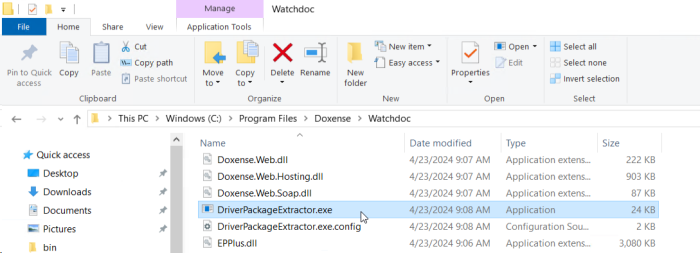
Dans l'outil DriverPackageExtractor :
Path to 7Zip : indiquez le chemin d'accès à l'utilitaire 7-Zip ;
Driver archive : indiquez le chemin d'accès vers le fichier compressé du pilote (téléchargé précédemment) ;
Temporary folder : indiquez le chemin vers un dossier dans lequel sont enregistrés temporairement les fichiers extraits du package du pilote et dans le champ File name, attribuez un nom à ce fichier final.
Cliquez sur le bouton Prepare package and analyse.
Indiquez l'endroit où vous souhaitez enregistrer le package du pilote une fois analysé par DriverPackageExtractor ;
cliquez sur Save :
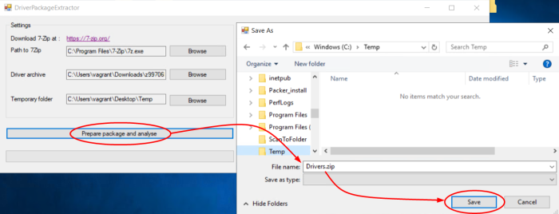
-
Lorsque le package est prêt, cliquez sur OK dans l'interface informant du succès de l'opération..
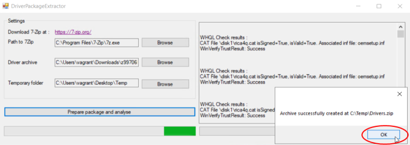
è Dès lors, ce package est conforme aux attente de WSC et vous pouvez l'y ajouter.
Si la préparation prend beaucoup de temps ou s'achève par un message d'erreur, il se peut que ce soit à cause du poids de l'archive. Dans ce cas allégez-le (cf. Alléger le dossier d'archive).
Pilotes Epson et Ricoh
Via un navigateur, rendez-vous sur le site officiel du fabricant.
Téléchargez le pilote correspondant aux périphériques d'impression à installer.
Envoyez les packages des pilotes téléchargés au Support Doxense via Connect en demandant qu'ils soient signés.
Enregistrez le package fourni en retour par Doxense sur le serveur qui héberge WSC.
Ajouter un pilote
-
Accédez à WSC en tant qu'administrateur.
-
Depuis le Menu principal ,cliquez sur le menu Plug and Print> Pilotes :
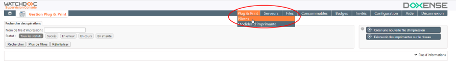
-
Depuis l'interface Pilotes, dans le menu du haut à droite, cliquez sur Ajouter un pilote.
-
Dans la fenêtre Ajouter un pilote,
-
glissez le package du pilote (fichier compressé zip) depuis votre espace de travail ;
-
ou cliquez dans le cadre pour ouvrir l'explorateur de l'espace de travail et sélectionner le package du pilote à télécharger :
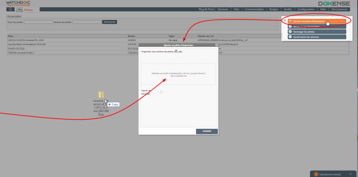
-
-
Cliquez sur le bouton Suivant ;
-
Dans l'interface Ajouter un pilote d'impression, quand le téléchargement s'est bien passé et que le package est valide, les champs suivants sont complétés :
-
Chemin vers .inf : chemin vers le fichier d'installation (.inf) présent dans le package du pilote et dans lequel se trouve la valeur DriverName.
-
Pilote : nom du pilote ou des pilotes contenus dans le package d'installation. S'il y en a plusieurs, choisissez dans la liste celui qui est compatible avec le(s) périphérique(s) utilisé(s).
-
Version : version du pilote.
-
Systèmes : version du système sur lequel est installé le pilote.
-
Package signé par : nom de l'émetteur (issuer) de la signature du pilote (Microsoft dans le cas d'un pilote WHQL ou Doxense, dans le cas de pilotes Epson ou Ricoh) :
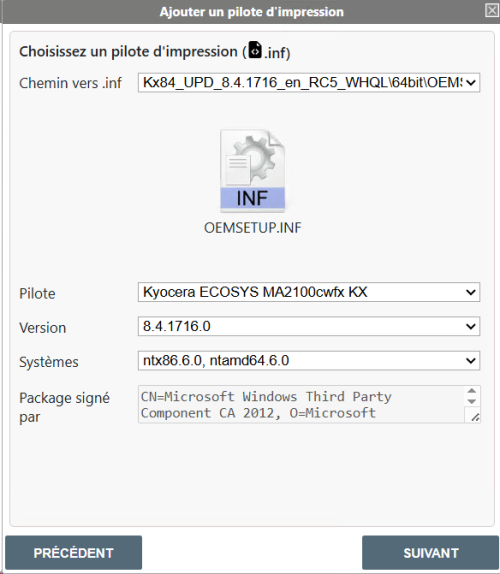
-
-
cliquez sur le bouton Suivant ;
-
dans la fenêtre Créer une file universelle,
-
Nom : attribuez un nom à cette file.
-
Cliquez sur Valider.
è Si l'opération s'est déroulée avec succès, le message suivant s'affiche.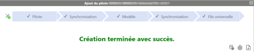
èDans le cas contraire, un message d'erreur s'affiche. Cliquez sur le bouton pour afficher les logs dans lesquels sont listées les erreurs.
Si vous n'arrivez pas à comprendre l'erreur et à réitérer l'opération avec succès, joingnez ces logs à un ticket Connect adressé au Support Doxense.